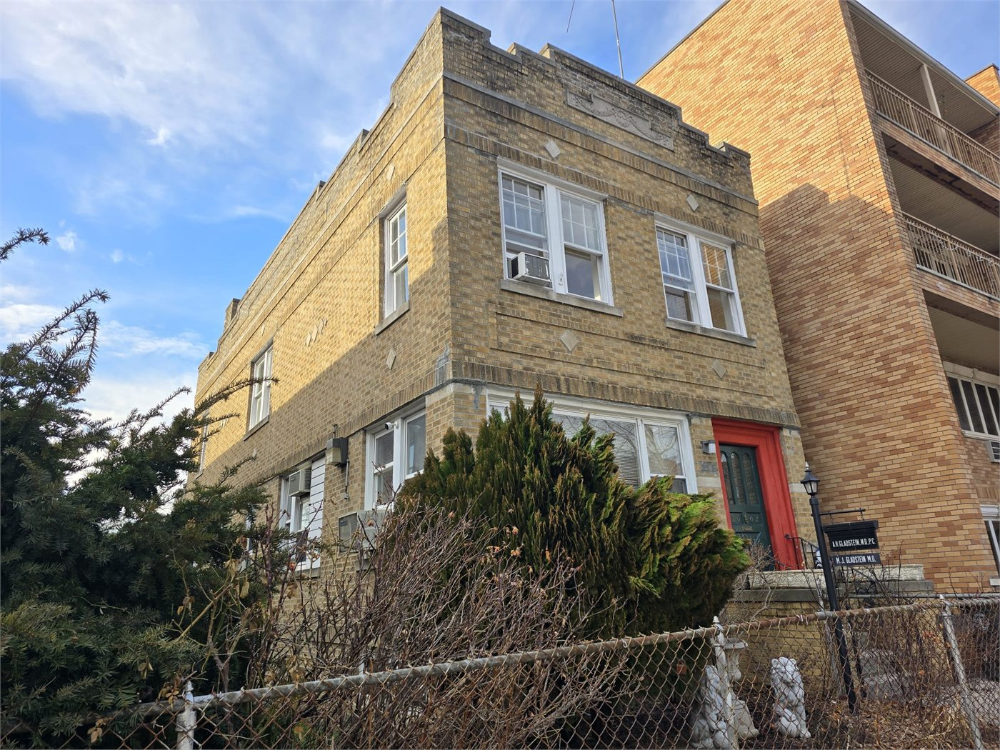
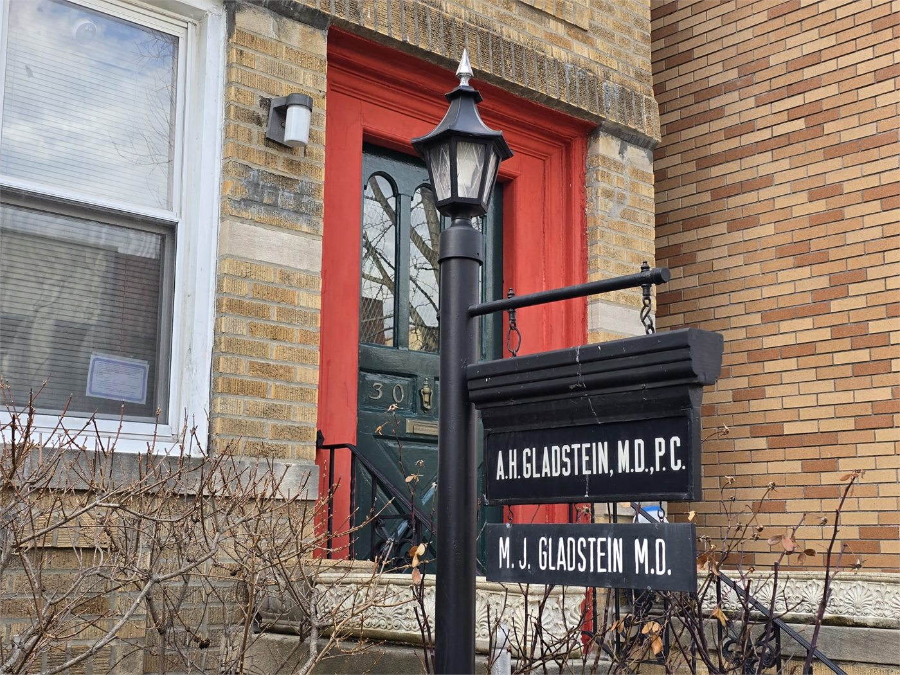
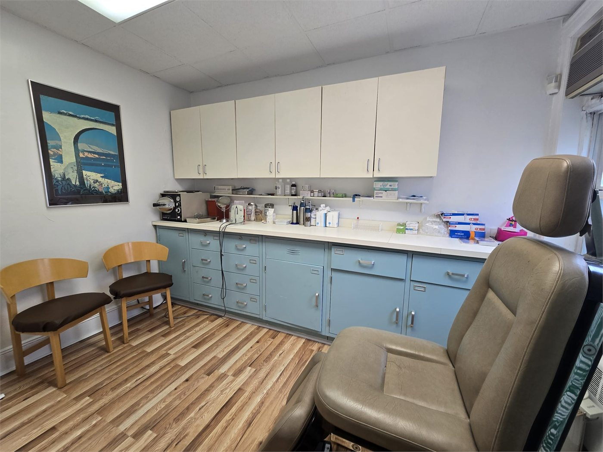

Street view of the Astoria office
The exterior photo helps patients recognize the building before arriving for a dermatology appointment in Astoria.
Clinic Photos
These photos show the office exterior, entrance signage, exam room, and treatment room for Dr. Michael Gladstein, MD at 30-62 36th Street in Astoria, Queens.

Photo Gallery
Each photo below is paired with descriptive text so the practice location and image subject are easy to understand.

The exterior photo helps patients recognize the building before arriving for a dermatology appointment in Astoria.
The sign photo reinforces the doctor name, office identity, and exact location in Astoria, Queens.

This room photo gives prospective patients a clear sense of the office environment and treatment setting.

Patients researching dermatology offices in Astoria often want to see the actual care environment before they book.
A professional doctor photo strengthens brand recognition for searches related to Dr. Michael and local dermatology in Astoria.
Appointments
Appointments are confirmed by phone. Use the contact page for directions, office hours, and booking details.